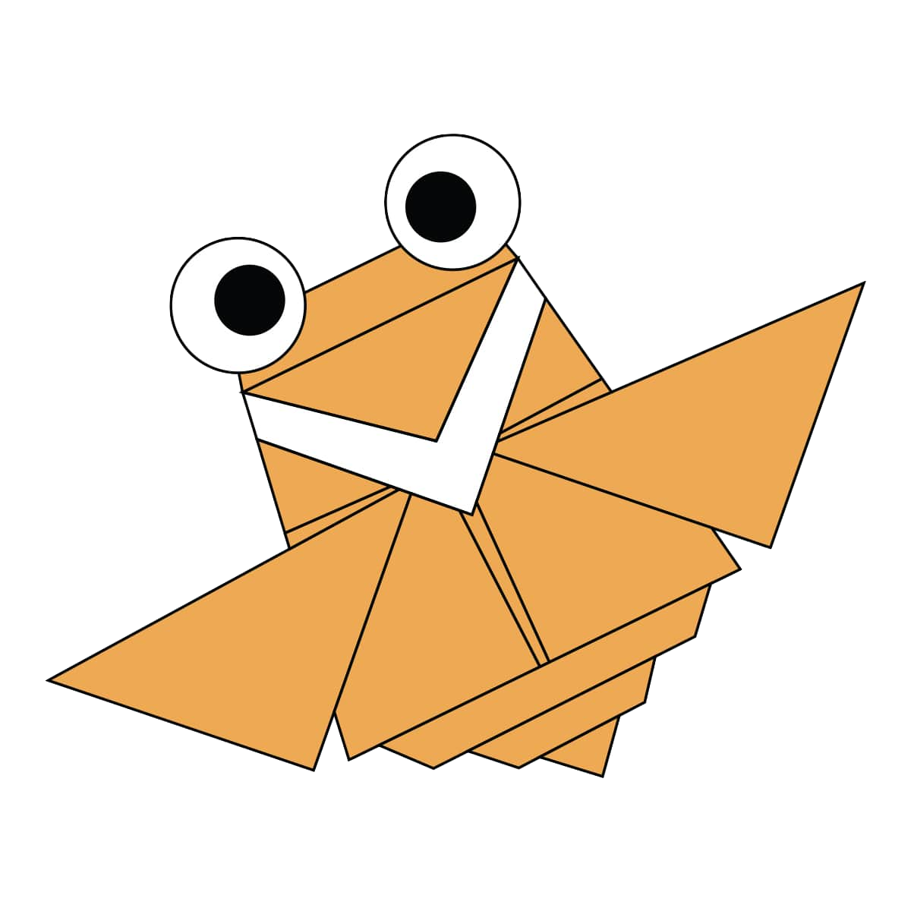

Origami Designs
Click on the images to know how to make them
About Us
Follow Us
Intresting Facts about Camel:
There are two types of camels:One "humped" or"dromedary".
A camel stomach is made up of 3 compartments.
Camels have straight spines,despites thier humps.
Camels can drink up to 40 gallons water in one time.
Camels have humps in which they store fat and can aurvive 4 weeks.
Intresting facts about Chameleon:
Chameleon have eyes in the back of their heads.
Chameleons come in a lot of different shapes and sizes.
Chameleons have etremely powerful tounges.
A group of chameleons is called a hump.
They inhabit warm locations such as rainforets and deserts.
Intresting Facts about Pigeon:
The pigeon moves the wings 10 times in 1 second while flying.
The memory of a pigeon is very fast due to which it was used as a postman in old times.
Pigeons can breed at the age of 6 months.
The pigeon is a very highly sensitive bird, it alredy steals natural disasters like volcanic eruptions,earthquakes.
It lives in a flock 20 to 30 pigeons.
Intresting Facts about Teddy:
The Oxford English Dictionary dates the firt use of the teddy bear 1906.
The official term of a teddy bear collector is an"arctophile".
The fist toy stuffed bear was created by German toymaker "Margarete Steiff."
The first British Teddy Bear Festival was held in 1989 in London.
Older Teddy Bears, that were created in the early 20th century, actually looked like real bears.They had long noses,dark eyes,and were very bear-shaped.Today,we have far more gentle looking bears,that you just want to snuggle up to!.
Intresting Facts about Panda:
Giant pandas spend 10-16 hours a day feeding, mainly on bamboo.
Pandas need at least 2 different bamboo species in their range to avoid starvation.
They have an extended wrist bone that they use like a thumb to help them grip food.
Pandas are BIG eaters – every day they fill their tummies for up to 12 hours, shifting up to 12 kilograms of bamboo!
The life span of a panda is about 20 years in the wild.

Intresting Facts about Cicada:
Cicadas are harmless.They do not bite or string.
Approximately 2,500 speices have been named so far.